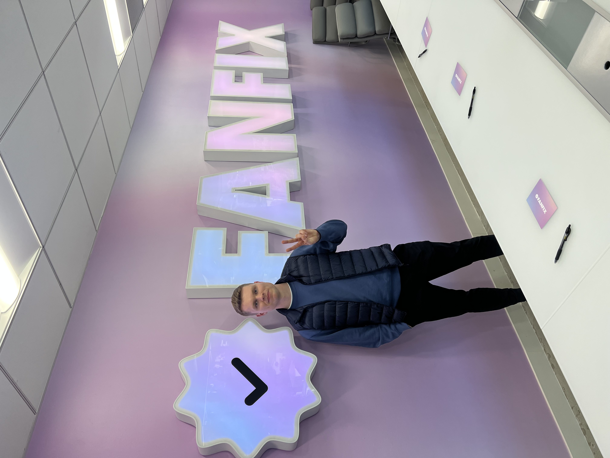
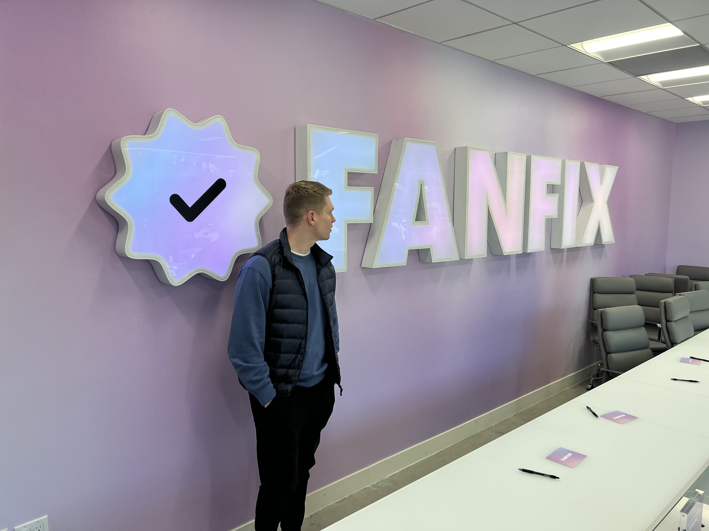
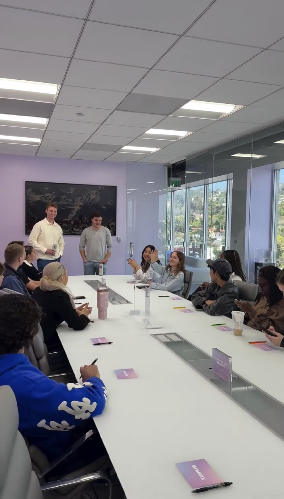
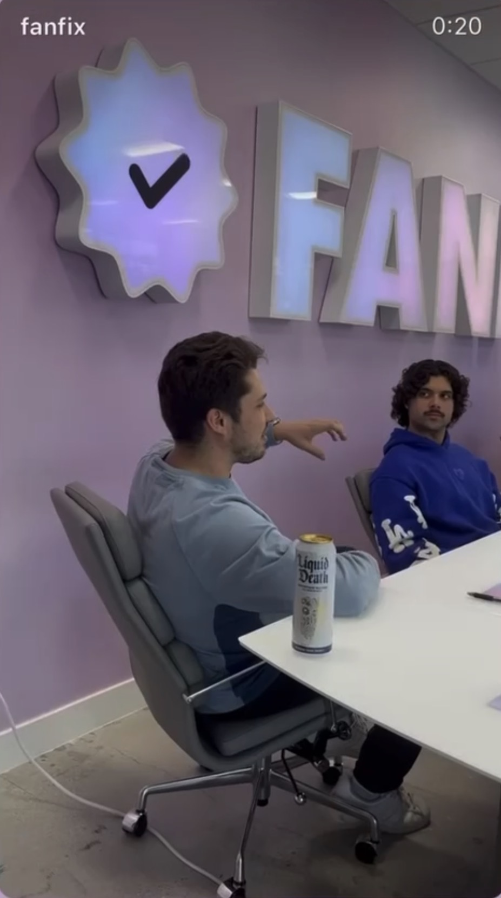
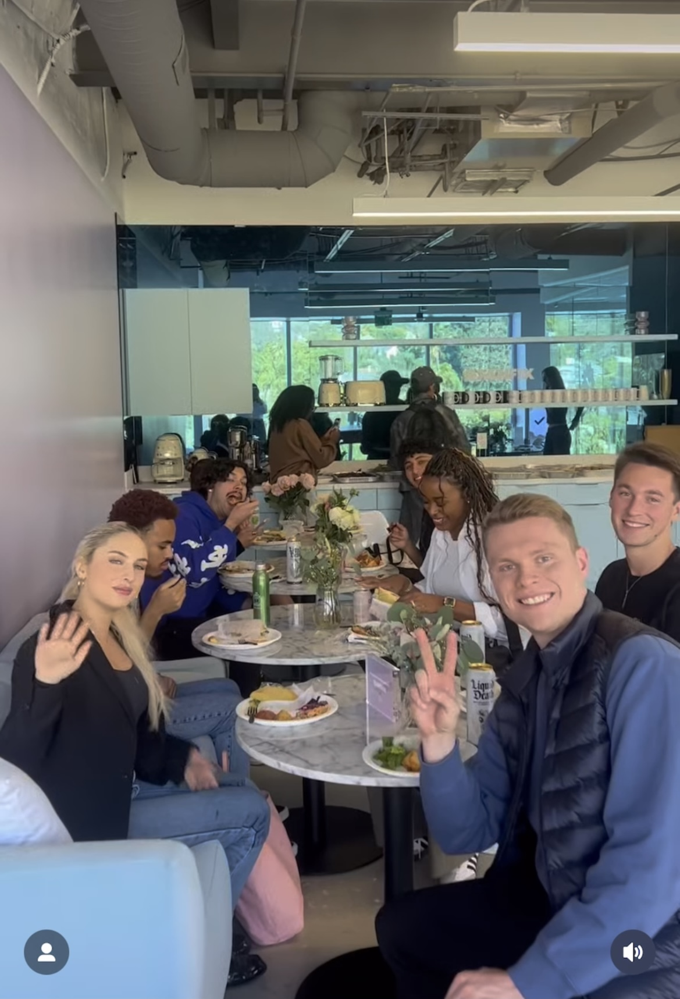
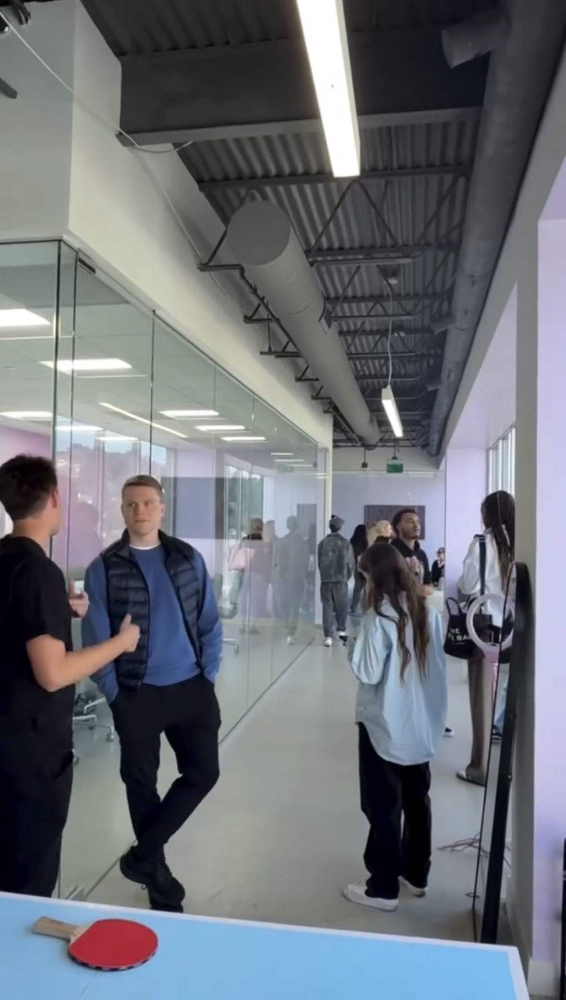
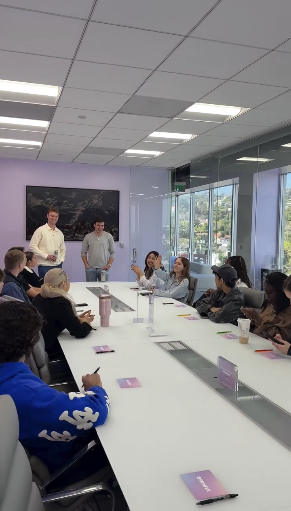
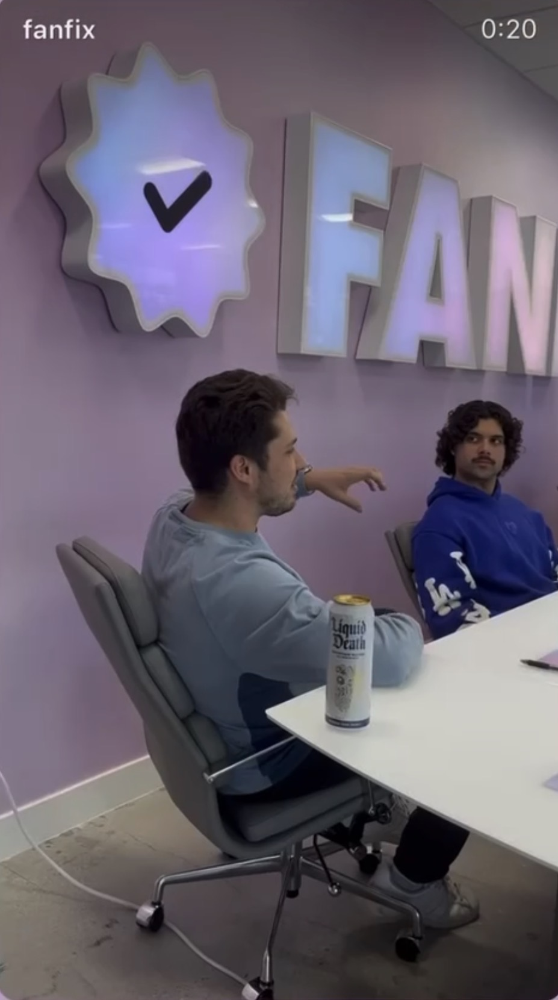
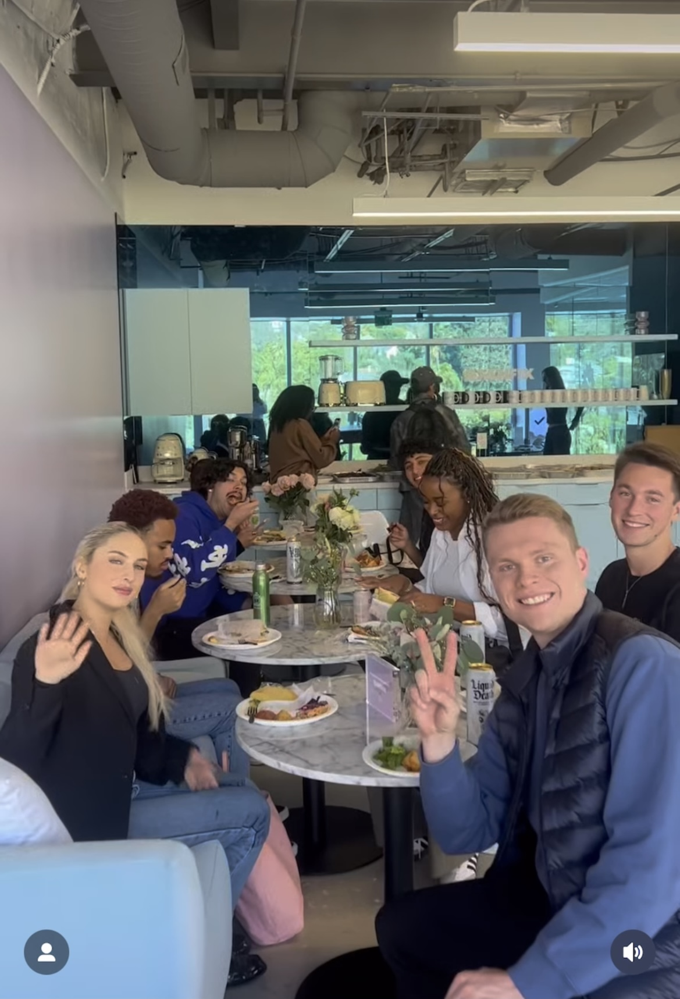
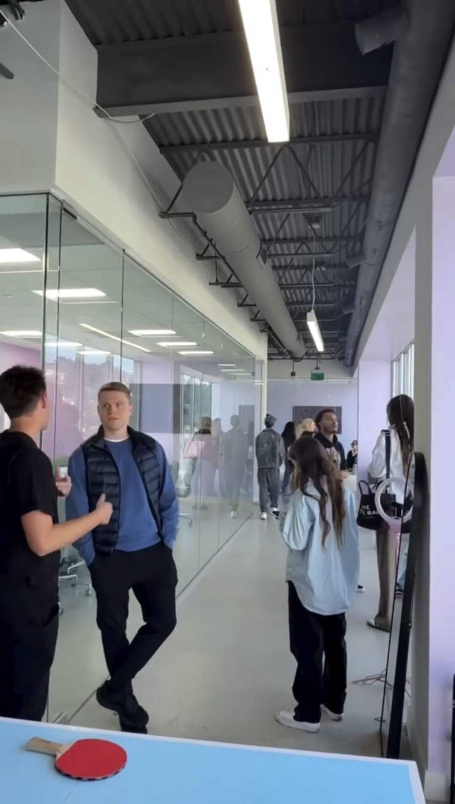

Business Lessons From 3 25 Year Old Multimillionaire Founders (FanFix)
On February 18th, 2025, I was very lucky to get the chance to tour FanFix HQ in West Hollywood, CA as one of approximately a dozen or so USC students who are involved in Social Media in some capacity.
The highlight of the tour was the chance to both have a formal Q&A and then a meet and greet with the cofounders - Harry Gestetner and Simon Pompan - both the same age as me at the time (~25 years old) but were multimillionaires who had exited their business at 21 years old in 2022.
It was definitely super inspiring to get to meet and talk to entrepreneurs our age who have done this, and it showed that entrepreneurship doesn't have to wait until an arbitrary date into the future, but rather can be done when you're young and in your early/mid 20s, especially if your business serves those in our generation (Gen Z).
This article will be a little bit concise and straight to the point compared to some of my articles, but it has some of the best business and entrepreneurship advice that I've personally ever received so far.
Photos
  







Side-Note: Why I'm Writing These Articles (feel free to skip)
If you're reading this, you might be wondering what the purpose of me writing these blog posts and articles are.
Because after all - as Harry and Simon said in their talk here even - success in business, career, and life in general often just comes down to execution, so why spend time writing this all out?
It's because as a part of my Master's and PhD in Astronautical Engineering at USC, I've mastered pretty much all of rocket science - to the point where I've been interviewed by top space companies like NASA, SpaceX, and others which you'd recognize, without getting a single technical question wrong.
Long story short - with rocket science as my first application of this - I've learned how to get REALLY good at REALLY HARD things fast. It literally almost doesn't get much harder than rocket science.
In order to not fail out of the PhD, I had to memorize EVERY equation and concept from all of my Astronautical Engineering Master's courses and know how to do problems from all of those classes completely by hand without the use of any computer, notes sheets, or anything, in order to pass an exam I had to take called my "Screening Exam."
I may or may not make a more in-depth article on my process for that and also observations I've had over time, but I'll summarize briefly here.
Long story short, while I'd taken and passed all of the classes which we were tested on on the qual exam before - Space Systems Engineering, Plasma Physics, Space Environment, Spacecraft and Rocket Propulsion, and Orbital Mechanics - I usually just sat through lectures and took exams while retaining enough information to pass before forgetting most of what I learned shortly after finishing the class and exams.
So while I technically took the classes and could brush up on the material if I needed to, I didn't TRULY understand the material to the point where I could ace technical interviews or apply the concepts in real-world scenarios without much though or effort. My understanding of the material AFTER organizing it, breaking it down to the deepest level, and memorizing it all was SIGNIFICANTLY higher.
Now that I look back on it, I feel like a lot of the creator talks or opportunities that I've had the opportunity to attend over the years probably go the same way.
For the most part, if I map my screening exam learning process onto the creator talks I've had the chance to attend over the years, I think that the learning probably maps very similarly to the benefit you get from passively sitting through classes/lecture then forgetting most of the material versus going back through your notes and applying the principles I did to truly understand the material at a different level.
I'm such a voracious note-taker sometimes that another PhD student even called me out on it, saying that their philosiphy is that "if somthing is important enough, you'll remember it (rather than having to jot it down in the notes app on my iPhone)" and while I definitely agree with this in a lot of contexts, my USC Astronautical Engineering PhD Screening Exam experience (and experience learning other hard things) implies otherwise for learning hard things at a deep level.
While this won't make sense on its own, the main principles I learned for studying hard things, from that exam, were 1) "Understand The Why", and 2) "Drill, Drill, Drill" (good examples). It's somewhat similar to the principles I outlined in my Standup Comedy Article on how to get better at comedy.
FanFix: From Idea to 8-Figure Acqusitision in 18 Months
I'll give a brief overview of FanFix, how they started, and what they do.
Harry Gestetner and Simon Pompan - then college students in late 2020 / early 2021 - came up with the idea of FanFix as a solution to the monetization problem in the emerging TikTok/Short-Form Centered Creator Economy.
One of Harry's cousins blew up on TikTok and had accumulated millions of views consistently, but he didn't make a single dollar off of his videos which was mind-blowing to Harry at the time.
So Harry, along with his cofounder Simon, decided to create FanFix, which is the premier Gen Z focused direct monetization platform.
They didn't have any technical experience so they had to hire a Dev Shop to build out the platform for them - they themselves had about $30,000 saved up, but that wasn't enough to pay for the remaining $70,000 out of the $100,000 they needed to pay the dev shop over payments they would make over a 6 month period.
Glossing over the details here, they signed the contract and had enough for the first two payments but not the last 4, so they had to commit and scramble to get funding. Some they got from friends or people they knew on campus, but the other money was from an investor who invested after FanFix was actually late on the fourth or fifth payment. They went through HUNDREDS of VC meetings and did even more linkedin outreach and outreach through many other channels, but only got that one good yes for their first investor.
When they did their LinkedIn outreach, they essentially searched up anyone and everyone on LinkedIn with "VC" or "Angel Investor" in thier bio.
As a side note related to USC only, they mentioned that USC actually has a good alumni network for this type of stuff, which I never thought of before, and to take advantage of this if needbe.
They also mentioned that it should be realistic to get any software business off the ground for ~$100k (maybe even less now with AI).
Even then, once they did launch, they didn't even get any users or money for the first few months, which was very stressful.
Once they did find their product-market fit, however, they had a $17,000 month after months of zero revenue, then they kept doubling in revenue practically every month going forward after that until the acquisition.
Shortly thereafter, they brought in a famous creator, Cameron Dallas, who I'd met in 2022, as a cofounder to help legitimize the business and the growth took off even further from there.
As we'll explore in the next section, product-market fit is key to having these types of "magic moments," so I'll start there since that was the biggest piece of advice.
The North Star For All Entrepreneurs
Product-Market Fit
Harry mentioned that the "north star for all entrepreneurs" is Product-Market fit.
In the example above, they were at $0 for a few months since they didn't have a perfect product-market fit with early versions of fanfix, but once they had that, their results and revenue compounded after that point.
Harry said that you have to ask yourself "what's the most basic form of this?" when you're creating a company.
That's called the MVP and is something I'll discuss briefly in the next section.
Minimum Viable Product (MVP)
One of the biggest issues that people get hung up on is trying to get something "perfect" before releasing it - instead, Harry, for a variety of reasons, warned against going for "perfection" before launching a beta version of your product.
The goal of an MVP is to test your "thesis" about your product (more on that below) as fast and effciently as possible, after which you can refine or add more polish if it gains real traction.
MVP success in't validated by features, but rather, by real usage and willingness to pay by real paying customers.
They believed in failing fast - and quickly - and getting feedback, then adjusting often.
The Thesis
During the informal meet and greet after, I talked to Harry and asked him a question along the lines of "How do you break into a crowded field or find your niche?"
His answer was something along the lines of "don't worry about a niche."
Instead, you have to formulate a thesis, then pick an area that's contrarian.
He emphasized that if the thesis isn't contrarian, then it likely won't work.
Then you test your thesis (primarily with the above MVP, and PMF frameworks), likely try and fail a few times (harry EMPHASIZED FAILURE), before you come to a solution.
In FanFix's case, their thesis was that Gen Z was willing to pay for exclusive content.
Lots of people (especially investors) laughted in their face, but there were a number of ways to prove it right and they eventually did.
The Internet is Growing Everyday
Harry also mentioned to me personally that the internet is growing everyday, so if you're not getting traction, you're dying (and more importantly, doing something wrong).
A few years ago I thought the creator space, etc. was all super saturated, but even in 2025/26, I see that I was very wrong.
There's no reason to think that this won't continue.
Execution IS Their Moat
Harry and Simon emphasized (and also do so through podcast appearances that they make) that execution is the best MOAT.
Better said, a lot of people had similar ideas and/or FanFix wasn't completely an original idea.
But the differentiator for Harry/Simon is that they actually EXECUTED on their idea and did so quickly and efficiently instead of taking their time or being stuck in analysis-paralysis.
Fail, Hundreds of Times
Harry and Simon mentioned that they both (especially Harry) started and failed at over 20 businesses before they stumbled upon FanFix. He said that they were all "colossal" failures.
It was only once they had their contrarian (and correct) thesis for that, an MVP, then a demonstrated product-market fit, did they succeed.
As mentioned in a previous section, when they were late on their 4th or 5th payment and ran out of money to pay the Dev Shop, they did hundreds of cold calls and investor meetings until ONE eventually bought into their vision and invested, which saved the company early on.
Overall though, They emphasized not waiting for the perfect launch early, getting feedback, iterating, testing, and changing direction fast. Sitting on an idea too long is worse than shipping something imperfect but workable.
Early on, they had absolutely zero leverage - no money, no credibility (i.e. until Cameron Dallas, and then later Superordinary came on), etc. - so failure was common, but execution + persistence is what created leverage for them.
Harry also gave a famous Winston Churchill quote which is that "Success is not final, failure is not fatal: it is the courage to continue that counts."
Failing is expected, but continuing (and executing with the frameworks here) will set you apart.
As a side-note, even Steven He in his talk mentioned how he failed over 200 times, before he went viral on his 212th video, then doubled down from there.
I definitely see a lot of parallels here.
Bonus Section: The Cold Start Problem
Harry didn’t mention this directly during the talk, but on multiple podcast appearances he’s said that :contentReference[oaicite:0]{index=0} is the book he recommends most to entrepreneurs.
At its core, the book explains why most network-driven startups fail early: before network effects help you, they actively work against you. When a product feels empty — no creators, no buyers, no conversations — users leave. This is what Chen calls the cold start problem.
Chen’s central insight is that startups don’t launch into a “market” — they launch into a tiny, fragile network. The goal is to build an atomic network: the smallest possible group of users where the product already feels useful and can grow on its own. Slack’s atomic network was a single small team. Tinder’s was one hyper-social college campus. Uber’s was a single city with enough drivers to keep wait times low.
A critical idea in the book is the hard side of the network — the small percentage of users who create most of the value. For marketplaces, this is supply. For content platforms, it’s creators. For collaboration tools, it’s the people who initiate work and invite others. Winning the cold start phase means obsessing over this group first, even if it slows overall growth.
Only after an atomic network crosses a tipping point — what Chen compares to the “Ali threshold” in biology — do network effects flip from destructive to compounding. From there, growth accelerates through acquisition, engagement, and monetization loops, eventually forming a durable moat that competitors struggle to replicate.
In other words, execution matters most when things are small, manual, and unscalable — exactly when most founders expect network effects to save them.
The book emphasized that during this first phase, you must relentlessly focus on finding your first atomic networks (where you can get traction), and THEN replicate that and expand from there.
Atomic networks are similar to the more popular "beachhead market" concept, except with the difference being that Atomic Networks take the concept to a more sophisticated level, but both are worth becoming familiarized with, especially in the early phases of starting.
There will certianly be many problems and difficulties throughout the course of a business, but overcoming the cold start phase will be the hardest, especially if you're starting with little or not capital.
Bonus Section: Other Misc Advice From The FanFix Visit
I wrote down some other good notes and feedback which didn't tie into the main points that harry and simon made during their talk with us (and which they usually make when making podcast appearances).
Harry and Simon both went to Harvard-Westlake - a very expensive Private High School in Los Angeles. They then went on to Tulane and Vanderbuilt, respectively, for college.
They both said to feel lucky and take advantage of the fact that we're at USC - since there's so many resources and opportunities we have access to because of that (something which I forget most of the time).
One of the first questions (that I wrote notes for) from someone in the USC group during the Q&A was along the lines of "how do we start our own businesses?" and Harry/Simon emphasized failure as a part of that process - they had A LOT of failed companies before FanFix.
Someone else asked how they got their first 1,000 users. And Harry/Simon's answer was emphasizing that the "product-market fit = the north star for all entrepreneurs" and that their user base, signups, revenue, etc. all compounded once they got that product-market fit. They said to ask yourself, when making a PMF, "what's the most basic form of this (the PMF)?"
Another one of our group asked something about how to find like-minded individuals (as cofounders, I think), and Harry/Simon said that the data is split on if a cofounder is good, BUT that either way, you need a good team around you in order to make the company happen.
They mentioned that the most successful types of creators on FanFix have a DEPTH in their following, in the sense that they can pull and bring followers across platforms and those followers will follow them.
A very important statistic that they mentioned is that over 56% of Gen Z want to be a creator - a number which is very eye-opening and probably only larger in 2026 and beyond.
Something else that they mentioned is that if you're a company, Apple Pay is one of the biggest things to implement, especially if you take any types of payments. This is a smaller but potentially high-impact piece of advice if it applies to you.
They also gave some quick advice on being a creator, which is: be consistent, target niches, use discoverability platforms (e.g. TikTok), maybe consider collabs - these are all the easy tips they say everyone should follow.
I also talked with another huge entrepreneur who's a creator/owner after the talk and he said that he 100% agrees with the Product-Market fit being everything, and he defined it roughly as "Making something that your customer wants (and will pay for), and getting it in front of them... and that Business in general essentially comes down to basically just making stuff that people want."
Closing Remarks
Overall, the visit to FanFix was incredibly insightful, and it gave me frameworks to think about starting a business, but also how to think about content creation, especially with regard to starting new channels, or manking my existing one work better, and other stuff.
The principles about the "North Star for all entrepeneurs being Product-Market Fit," Formulating a thesis, being contrarian, the cold start problem, and failure are all GREAT frameworks for anyone looking to succeed in content or business going forward.
This was a highly impactful visit for me personally, and if I end up becoming a successful entrepreneur, it will in large part be because of the principles I learned here - Harry and Rory have entrepreneurship broken down to a science, and thta's extremely useful for someone who's more analytically minded like me.
More Useful Resources
Simon and Harry made a number of appearances on various business-related podcasts from their acquisition in 2022 through 2024 or 2025, and I'd highly recommend listening to them. They repeat a lot of the same advice given here, give it much more eloquently, and go into further detail than I do here.
Even though they're not super well known outside of the creator economy (heck, even I didn't know of them before this tour), their frameworks for buiding businesses are gold for any and all entrepreneurs out there.